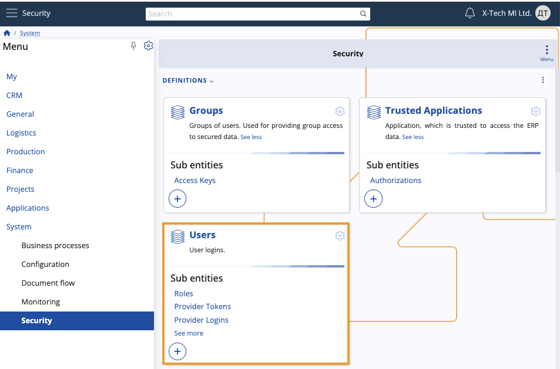
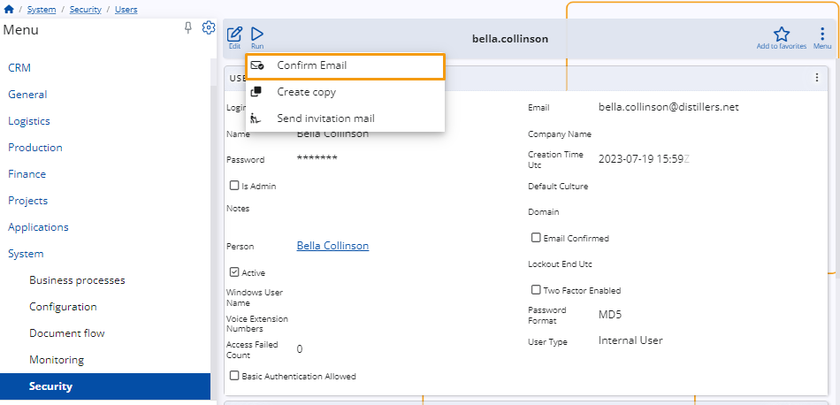
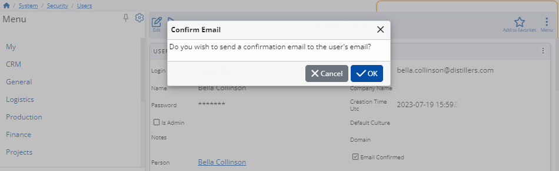
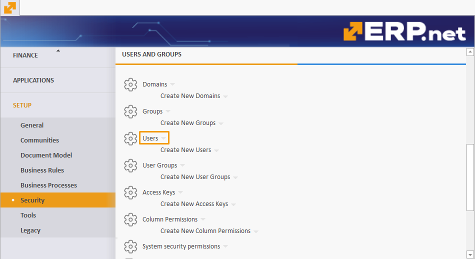
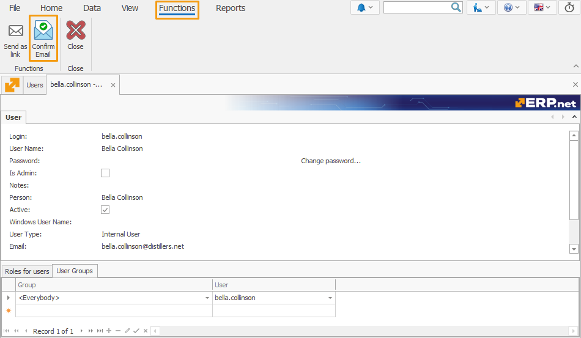
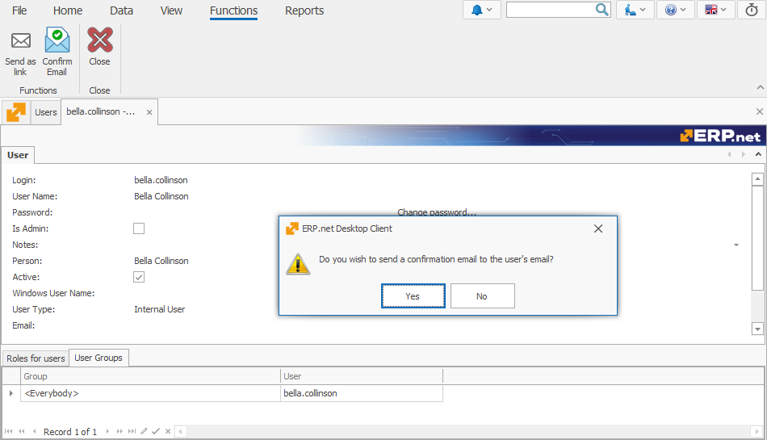
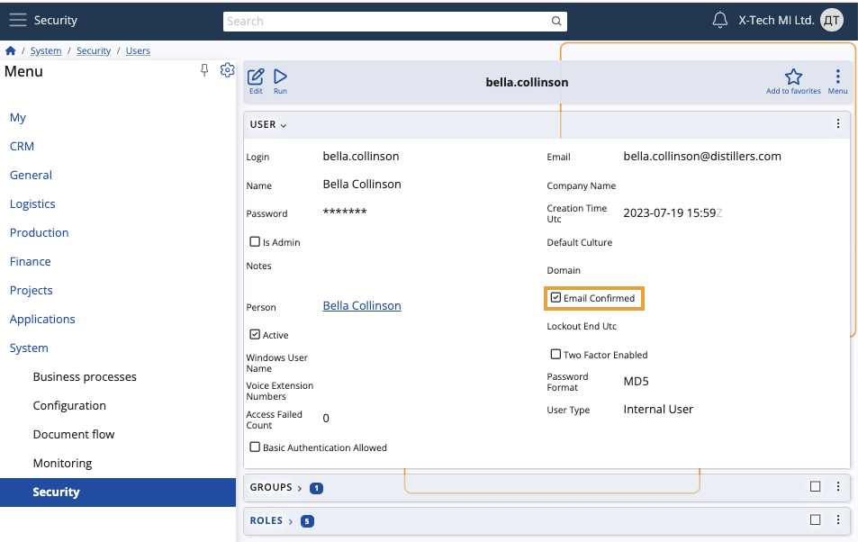

Confirm Email
The Confirm Email function allows administrators to quickly send a confirmation request to the email address specified in a user's profile.
It streamlines the overall email verification process by saving time and ensuring a provided address is up-to-date.
Important
The function will not work if:
- you're in Edit mode for the user profile; in this case, it will be greyed out
- the Email field of the user is empty; in this case, it will result in an error
- the email of the user is already confirmed; in this case, it will result in an error.
Using the function in the ERP.net Web Client
Below is a step-by-step guide for using the Confirm Email function in the ERP.net Web Client.
Navigate to the Users panel and open the user whose email you want to confirm.
Make sure this email is specified in their Email field.

To trigger the function, click the Run button and select Confirm Email.
This will not be possible if you enter Edit mode for the user.

A pop-up will appear asking whether you want to send the confirmation email.
Click OK to proceed.

The user should receive their confirmation request provided that their email address hasn't been already verified.
Inside, the message will look like this:
"Hi [User Name],
We have received a request to update your email address. Please confirm this change by following this link below:
[Link]
Thank you for your cooperation. If you did not initiate this process, please contact the system administrator for assistance."
Note
Upon clicking their verification link, a user will be taken to a one-time login form where they need to enter their credentials in order to access their profile. Inside, they can confirm their email address by either changing it or keeping the one they've provided.
Using the function in the ERP.net Desktop Client
The Confirm Email function can also be executed in the ERP.net Desktop Client.
Navigate to the Users navigator and open the user whose email you want to confirm.

Navigate to the Functions tab and click on the Confirm Email function.

A pop-up will appear asking whether you want to send the confirmation email.
Click OK to proceed.

The user should receive their confirmation request provided that their email address hasn't been already verified.
Email Confirmed status
Starting from ERP.net version 25, the Email Confirmed field in the definition of the user will automatically get a check mark if the email confirmation process is successful.

This field cannot be modified manually. However, its check mark will disappear if the Email of the user is changed or deleted.
In that case, a new confirmation process will be necessary for the email to be verified.
If the process is successful, the Email Confirmed field of the respective user will receive a check mark once again.
Note
This feature will be available from version 25 onward. Your current platform instance may not support it yet.
Note
The screenshots taken for this article are from v24 of the platform.